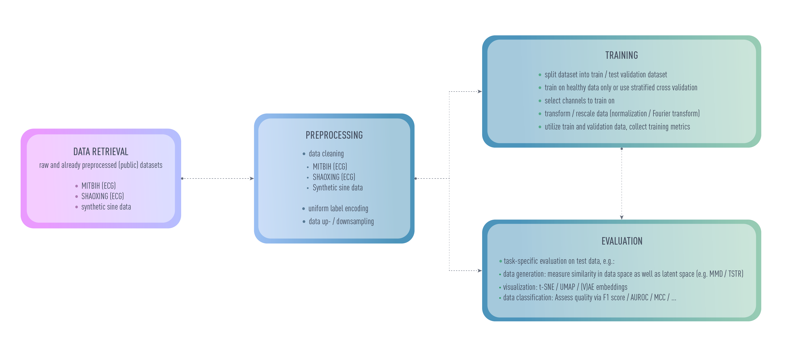

ECGAN Structure
ECGAN builds on stark abstractions to allow interexchangeable components to support different tasks (such as time series classification or generation) and various models und PyTorch.
General overview
{kind=link}
ECGAN strives to be a self-contained framework for everything you might need for evaluating ECG data. Most relevant parameters can be set using an autogenerated configuration file. This file controls which dataset shall be evaluated, how it is to be preprocessed and which model should be trained on it. Little additional configuration is required for most evaluation scenarios, especially if you would like to reproduce results. Additional configuration files which require a trained model can be generated for creating an inverse mapping for generative models and for tasks such as anomaly detection. Some metrics are already evaluated during training (e.g. to assess the quality on the specific task) to validate the performance while an additional pipeline is offered for e.g. anomaly detection on the resulting test dataset. During training, the data splits with the resulting data folds is saved and can freely be reused for future evaluation scenarios.
Run models using the CLI
Configurations with defaults supplied by the model implementation itself and easy to use CLI commands make it easy to reproduce experiments published with ecgan as their basis.
Running experiments follows an easy procedure:
- Create a config using
ecgan-init(e.g.ecgan-init -d mitbih_beats -m vaegan ecgan test_project test_runwhich initializes a configuration for the MITBIH dataset using the beatwise segmentation, thevaegan model and saves the results in the project test_project of entity ecgan with run name test_run. - Optional: change the configuration as desired. Using a different model or datasetusually requires a quick reinitialization of the config since other parameters might be required or the default.
- Download the data and perform some heavier preprocessing (e.g. some downsamplingtechniques such as LTTB) using
ecgan-preprocess. Afterwards, the data willbe available in the data directory. - Start the training procedure using
ecgan-train.
After training you can perform anomaly detection:
Initialize the anomaly detection config:
ecgan-detect -i path/to/run:model_version entity_name project_name experiment_nameStart detection using
ecgan-detect.
For some generative models you can similarly learn an inverse mapping (from latent space to data space) using ecgan-inverse.
By default, the configuration will be saved in config.yml for preprocessing and training and in
ad_config.yml for anomaly detection. To change this, specify a different output
file during initialization using the -o flag (e.g.
ecgan-init -d mitbih_beatgan -m beatgan ecgan test_project test_run -o another_config.yml.
This config can then be used during e.g. training by appending the config name to the command
(ecgan-train another_config.yml) meaning that you can simply save old configs and rerun your experiments
at a later point in time.
Managing the workflow
Internally, the CLI commands are managed by the Manager. The manager expects the following:
- Relevant information for your run is determined during initialization. While you can change the informationafterwards, you should initialize the run with the correct model and datasets since they configure themselves andhave different defaults.
- After preprocessing, data is saved in
<data_dir>/<dataset_name>/processedasdata.pklandlabel.pkl. - During training, data is given to the trainer which reads the data from the specifieddataset folder, performs additional preprocessing depending on the problem (e.g.some normalization and splitting ), saves relevant information to reproduce the run (such as the datasplits into train/vali/test) and starts training (default: (stratified) cross validation).
- To perform anomaly detection or the inverse mapping, a model is saved during training. This model is loaded(from disc, cloud or from a tracking tool) into memory, data splits are restored anddetection is performed.
Implement Your Own Usecase
To implement your own datasets, models or anomaly detectors, distinctive simple interfaces have to be used to fit into the framework. More information can be found inside the API documentation of Datasets, Modules and Anomaly Detector respectively.